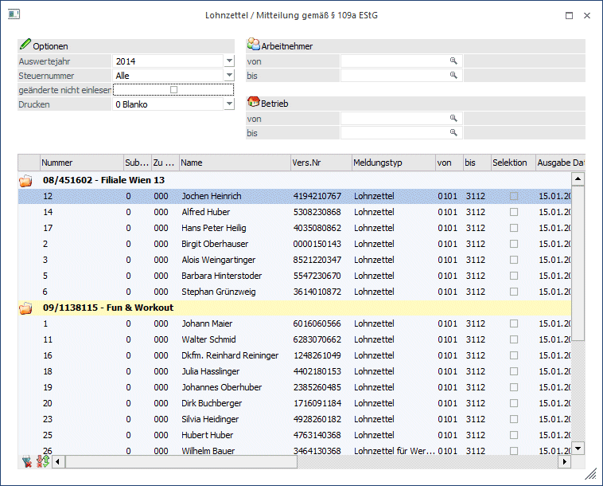
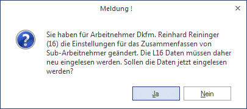
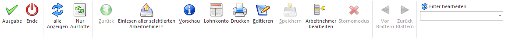

Der Lohnzettel - L16 wird für verschiedene Zwecke benötigt:
ü Übermittlung an das FA
Die L16
müssen automatisch bis 28. Februar (bzw. 29. Februar) des Folgejahres
unaufgefordert in elektronischer Form an das FA übermittelt werden bzw. bei
einem Austritt muss der L16 bis zum Letzten des Folgemonats ebenfalls
übermittelt werden (in diesem Fall entfällt die Übermittlung zum
Jahresende).
ü AN-Nachweis
Wenn ein AN
unterjährig austritt, so kann er ein L16 zur Vorlage für seinen nächsten AG
fordern.
Der Menüpunkt wird im WinLine LOHN unter
1 Auswertungen
1 Lohnzettel/Mitteilung gemäß § 109a EStG
geöffnet.

Eingabefelder
Ø Auswertejahr
In der Auswahllistbox werden alle Jahre angezeigt, für die Abrechnungen vorhanden sind. Für die Ausgabe von L16 kann das gewünschte Abrechnungsjahr ausgewählt werden.
Ø Steuernummer
Aus der Auswahllistbox kann das Finanzamt gewählt werden, für das die L16 ausgegeben werden sollen. Hier werden alle Steuernummern angezeigt, die in den Betriebsdaten erfasst wurden. Wurde eine Steuernummer bei mehreren Betrieben hinterlegt, so wird die Steuernummer trotzdem nur einmal vorgeschlagen (Steuernummern werden zusammengefasst). Wird die Option "Alle" verwendet, dann werden alle AN angezeigt, wobei in der Tabelle dann eine Trennung nach den Steuernummern erfolgt.
Ø Geänderte nicht einlesen
Wenn diese Checkbox aktiviert wird, dann.
Ø Drucken
Hier kann gewählt werden, ob der Lohnzettel mittels Formular oder in "Tabellenform" ausgedruckt werden soll.
Ø Austritte ab
Hier kann eingegrenzt werden ab wann Austritte berücksichtigt werden sollen (wenn der Button "nur Austritte" gedrückt wird).
Ø Austritte bis
Hier kann eingegrenzt werden bis wann Austritte berücksichtigt werden sollen (wenn der Button "nur Austritte" gedrückt wird).
Ø Arbeitnehmer von - bis
Hier kann eine Einschränkung von bestimmten AN hinterlegt werden. Wie die AN-Nummer eingegeben werden kann, dazu gibt es mehrere Möglichkeiten. Details dazu entnehmen Sie bitte dem Kapitel Aufruf einer AN-Nummer. Wird in den Feldern von - bis ein AN eingetragen, so wird daneben der Name des AN angezeigt, wobei der Name unterstrichen dargestellt wird. Durch einen Klick auf den AN wird standardmäßig der AN-Stamm aufgerufen. Über die rechte Maustaste kann aber individuell eingestellt werden, welche Aktion ausgelöst werden soll. Dabei stehen folgende Optionen zur Verfügung:

ü Arbeitnehmerstamm
Es wird der
AN-Stamm aufgerufen, wobei gleich der Datensatz des angezeigten AN angezeigt
wird.
ü Arbeitnehmerinfo
Es wird die
Arbeitnehmerinfo im Programm WinLine INFO geöffnet.
ü Jahreslohnkonto
Es wird das
Steuerfenster für das Jahreslohnkonto aufgerufen, wo der ausgewählte AN gleich
vorgeschlagen wird. Die Ausgabe muss nur mehr durchgeführt werden.
ü Arbeitnehmer Stammblatt
Es wird
das Steuerfenster für das Arbeitnehmer Stammblatt aufgerufen, wo der ausgewählte
AN gleich vorgeschlagen wird. Die Ausgabe muss nur mehr durchgeführt werden.
ü Lohnerfassung A
Es wird die
Einzelabrechnung aufgerufen, wobei gleich alle Daten des ausgewählten AN
abgerufen werden. Bei diesen Punkt ist darauf zu achten, dass ggf. die
automatischen Lohnarten abgearbeitet werden.
Die zuletzt getätigte Einstellung wird als Standard übernommen, d.h. wenn das nächste Mal nur auf den AN-Namen geklickt wird, dann wird die letzte Aktion automatisch durchgeführt. Diese Einstellung wird pro Benutzer gespeichert.
Ø Betrieb von - bis
Hier kann eine Einschränkung der Betriebe vorgenommen werden, für die L16/E18 erstellt werden sollen. Durch Drücken der F9-Taste kann nach allen angelegten Betrieben gesucht werden.
Hinweis
Bei dieser Einschränkung wird die Einstellung des Betriebes vom AN-Stamm und nicht von der Abrechnung genommen.
Durch Anklicken des Anzeigen-Buttons (oder Tastenkombination ALT + Z) werden alle AN gemäß der Selektion in der Tabelle angezeigt. Durch Anklicken des Buttons "Nur Austritte" werden in der Tabelle nur jene AN angezeigt, die in einer Vorperiode ausgetreten sind und für die noch kein L16 ausgestellt wurde.
In der Tabelle werden folgende Daten angezeigt:
In der ersten Zeile, die auch fett dargestellt wird, wird die Steuernummer angezeigt. Darunter werden dann alle AN angezeigt, die für diese Steuernummer abgerechnet wurden. Aufgrund der Selektion kann es vorkommen, dass auch mehrere Steuernummern in der Tabelle vorhanden sind, diese sind eben durch die Darstellung in Fettschrift zu unterscheiden. Pro Arbeitnehmer werden folgende Felder angezeigt:
Ø Nummer
Hier wird die AN-Nummer angezeigt. Das ist auch das Sortierkriterium innerhalb der Tabelle (Achtung: Die AN-Nummer ist alphanumerisch).
Ø SUB-Nr.
Falls für diesen AN SUB-AN angelegt wurden, wird hier die entsprechende SUB-Nr. angezeigt.
Ø Zu Sub-Nr.
Wenn für einen Arbeitnehmer SUB-AN angelegt wurden, kann über diese Auswahllistbox entschieden werden, für welchen AN der L16 ausgegeben werden soll. Standardmäßig werden alle SUB-AN auf den Haupt-AN (das ist der AN mit der SUB-Nr. 0) gerechnet. Wenn diese Zuordnung geändert werden soll, muss darauf geachtet werden, dass kein SUB-AN auf den AN verweist, der geändert werden soll.
Beispiel:
AN-Nr. 005 hat einen SUB-AN, wobei das L16 mit allen Werten für den SUB-AN 1 ausgegeben werden sollen. Wenn zuerst beim SUB-AN 0 der Verweis auf den SUB-AN 1 geändert wird, dann wird die Meldung
angezeigt. In diesem Fall muss zuerst die Zuordnung des SUB-AN 1 geändert werden (auf sich selbst), erst dann kann die Zuordnung vom SUB-AN 0 geändert werden.
Wenn die Zuordnung verändert wurde, dann wird die Meldung

angezeigt. Wird diese Meldung mit JA bestätigt, dann werden die Werte neu eingelesen. Wird die Meldung mit NEIN bestätigt, wird auch die Zuordnung der SUB-AN-Nr. rückgängig gemacht.
Ø Name
Name des AN.
Ø Vers.Nr.
Hier wird die Versicherungsnummer des AN angezeigt.
Ø Meldungstyp
Hier wird angezeigt, ob es sich um einen Lohnzettel oder um einen Werkvertrag handelt. Damit Werksverträge auch als Werksverträge erkannt werden, müssen folgende Voraussetzungen gegeben sein:
ü Im AN-Stamm muss die Option "Werkvertrag" (Register LSt) aktiviert sein.
ü In der Abrechnung wird dieses Kennzeichen übernommen. Sollten Abrechnungen ohne Kennzeichen durchgeführt worden sein, so kann das Kennzeichen nachträglich über die Rollung aktiviert werden.
Hinweis:
Für Werkverträge werden immer 2 Datensätze bereitgestellt: Einmal ein Typ "Lohnzettel" (sofern SV-Abgaben für den AN geleistet wurden) und einmal ein Typ "Werkvertrag", mit dem die Meldung gemäß § 109 (E18) durchgeführt wird. Bei einem unterjährigen Austritt muss bis zum 15. des Folgemonats nur der "Lohnzettel" übermittelt werden, die Meldung gemäß § 109 (E18) erfolgt immer erst am Jahresende.
Ø Selektion
Durch Aktivieren der Checkbox kann bestimmt werden, das der L16 für diesen AN ausgegeben werden soll. Wird die Checkbox deaktiviert, wird keine Ausgabe vorgenommen. Zusätzlich hat diese Checkbox noch eine Selektionsfunktion: beim Einlesen kann unter Anderem gewählt werden, dass nur die Datensätze eingelesen werden sollen, die "Markiert" - bei denen die Checkbox "Ausgabe" aktiv ist - wurden.
Ø Ausgabe Datum
Wurde für den AN bereits eine Ausgabe durchgeführt, wird hier das Datum der Ausgabe angezeigt.
Ø ELDA Ausgabe
Wurde für den AN bereits eine ELDA Datei erzeugt, wird hier das Datum an dem die Datei erzeugt wurde angezeigt.
Ø Storno Datum
Wurde das L16 storniert, wird hier das Stornodatum angegeben.
Ø Status
In diesem Feld wird der Status des AN angezeigt. Dabei können folgende Stati vergeben sein:
ü nicht eingelesen
In diesem Fall
sind die Daten nicht aktuell und können somit auch nicht ausgegeben bzw.
gedruckt werden.
ü Eingelesen
In diesem Fall sind
die Daten bereits einmal eingelesen worden - allerdings kann es trotzdem sein,
dass die Daten nicht aktuell sind, weil das Einlesen bereits vor Monaten erfolgt
sein könnte.
ü keine eigene Meldung
Dieser
Status steht bei SUB-AN, deren L16 zum Haupt-AN addiert wurden.
ü manuell geändert
Dieser Status
wird dann vergeben, wenn die Werte des L16 verändert und abgespeichert wurden.
Zusätzlich dazu wird auch das Datum der Änderung in der Spalte "Geändert"
ausgewiesen.
Wann ändert sich der Status?
Standardmäßig wird immer der Status "nicht eingelesen" angezeigt. Werden Daten eingelesen, so bekommen Sie den Status "eingelesen". Wird aber danach eine Einzelabrechnung, eine Stapelabrechnung, eine Rollung oder das Löschen einer Abrechnung durchgeführt, dann wird wieder der Status "nicht eingelesen" vergeben. Damit wird verhindert, dass unvollständige Daten ausgegeben oder gar übermittelt werden. Einzige Ausnahme: Wenn die Daten eingelesen, verändert und im Anschluss gespeichert wurden, dann wird der Status nicht mehr auf "nicht eingelesen" verändert.
Ø Geändert
In dieser Spalte steht das Datum, an dem eine ggf. durchgeführte Änderung eines AN gespeichert wurden.
Ø Korrektur
Diese Checkbox muss dann aktiviert werden, wenn ein L16 als Korrektur ausgegeben und in weiterer Folge an die Datakom übermittelt wird. Dadurch wird dem Datensatz ein eigenes Kennzeichnen mitgegeben, das den Datensatz als Korrekturdatensatz (und nicht als nochmalige Erstübermittlung) ausweist.
Ø Lohnzettelart
Hier kann die Lohnzettelart ggf. geändert werden.
Übersicht über die Verfügbaren Lohnzettelarten:
01 Lohnzettel § 84 (1) und (4) EStG 88
(beschränkt oder unbeschränkt Steuerpflichtiger)
02 Lohnzettel § 84 (1) EStG 88
(Auslandsbezüge gemäß §3(1)10 bis einschl. idF BBG 2011 oder Z11 EStG 1988)
03 Lohnzettel Krankenversicherungsträger § 69 (2) EStG 88
(Krankengeld als Ersatzleistung für Aktivbezug)
04 Lohnzettel Heeresgebührenstelle § 69 (3) ESG 88
(Bezüge nach dem VI. Hauptstück des Heeresgebührengesetzes 2001)
05 Lohnzettel Krankenversicherungsträger § 69 (6) EStG 88
(Rückzahlung von Pflichtbeiträgen)
06 Lohnzettel § 84 (1) EStG 88 (Wochengeld
07 Lohnzettel über Insolvenz-Entgelt § 69 (6) EStG durch den IEF (Insolvenz-Entgelt-Fonds)
08 Lohnzettel für Steuerpflichtige, für die auf Grund von DBA keine Lohnsteuer einzubehalten ist
11 Lohnzettel § 84 (1) EStG 88 - pflegebdingten Geldleistung
(Pflegegeld, Pflegezulage, Blindengeld oder Blindenzulage)
12 Lohnzettel § 84 (1) EStG über Auszahlungen aus der betrieblichen Vorsorge
15 Lohnzettel Krankenversicherungsträger § 69 (7) EStG 88
(Lohnzettel für Bezüge im Sinne des Dienstleistungsscheckgesetzes)
16 Lohnzettel über Insolvenz-Entgelt § 69 (6) EStG durch den IE Fonds
Auslandsbezüge nach § 3 (1) 10 oder 11 EStG)
18 Lohnzettel § 84 (1) EStG 88 mehrere LZ vom selben Arbeitgeber mit überschneidenden Zeiträumen
19 Lohnzettel § 69 (9) EStG 88 - Rückzahlung von Pensionsbeiträgen nach
§ 25 Abs. 1 Z 3 lit. E EStG 1988
23 Lohnzettel § 84 (1) EStG 88 (Auslandsbezüge nach § 3 Abs. 1 Z 10 EStG 1988, idF AbgÄG 2011)
24 Lohnzettel für Zeiträume, für die dem ausländischen Staat gemäß DBA mit Anrechnungsmethode das
Besteuerungsrecht zugewiesen wurde
Achtung:
Derzeit gibt es noch keine Plausibilitätsprüfung für alle Lohnzettelarten.
Hinweis:
Wird die Lohnzettelart geändert, muss neu eingelesen werden.
Buttons

Ø Ausgabe
Mittels "Ausgabe" Button oder der Taste F5 werden die Daten für die ELDA Übermittlung bereitgestellt und können im Anschluss unter dem Menüpunkt "Formulare Ausgabe elektr. Meldungen für ELDA" übermittelt werden.
Ø Ende
Mittels "Ende" Button oder der Taste ESC wird der Menüpunkt geschlossen.
Ø Alle Anzeigen
Mittels "alle Anzeigen" werden alle Arbeitnehmer in der Tabelle geladen
Ø Nur Austritte
Mittels "nur Austritte" werden nur jene Arbeitnehmer in der Tabelle geladen, die ausgetreten sind
Ø Zurück
Mittels "Zurück" Button gelangt man zum Beispiel aus der Vorschau wieder zurück in die Tabelle
Ø Einlesen
Durch Anklicken des Einlesen Buttons können die Werte von AN berechnet werden.
Ø Vorschau
Mittels "Vorschau" Button kann eine Vorschau eines Lohnzettels geöffnet werden und mittels der Buttons "Vor-Zurück Blättern" kann zwischen den Seiten gewechselt werden.
Ø Lohnkonto
Dieser Button öffnet das Lohnkonto des Arbeitnehmers auf den der Fokus gesetzt ist bzw. dessen in der Vorschau geladen sind.
Ø Drucken
Ermöglicht den Ausdruck des Formulars. Mittels Drop Down im Fenster "Drucken" kann gewählt werden, ob "Blanko" (Lohnzettel Vordruck) oder als "Formular" gedruckt werden soll.
Ø Editieren
Durch Anklicken des Editieren-Buttons wird - je nach Meldungstyp - das L16 oder das E18 in Formularform dargestellt und kann auch teilweise editiert werden. Die grau hinterlegten Felder sind reine Informationsfelder (werden immer aktuell aus dem AN-Stamm geladen) und können nicht bearbeitet werden. Alle anderen Felder können bearbeitet und um Werte ergänzt werden. Wenn das Editieren aufgerufen wurde, steht der Button "Speichern zur Verfügung mit dem die Änderungen gespeichert werden können. Wurde ein Lohnzettel editiert, so ist dies am Status "manuell bearbeitet" ersichtlich.
Ø Speichern
Mit dem "Speichern" Button können die editierten Werte gespeichert werden.
Ø Arbeitnehmer bearbeiten
Im Bereich Arbeitnehmer bearbeiten kann jeder Arbeitnehmer einzeln bearbeitete werden. Zum einen werden nun hier die Stornomeldungen erzeugt. Zum anderen können Hier die einzelnen Abrechnungsperioden und Abrechnungen zusammengefasst werden.
Ø Stornomodus
Der Stornomodus muss aktiviert werden, wenn im Arbeitnehmer bearbeiten ein Storno durchgeführt werden soll.
Ø Vor Blättern, Zurück Blättern
Mittels "Vor und Zurück Blätter" Buttons kann in der Vorschau bzw. im Editieren zwischen den beiden Seiten des L16 gewechselt werden.
Ø Filter
Mittels Filter kann auf Daten aus dem AN-Stamm zugegriffen werden. Ist ein Filter hinterlegt, der zum Beispiel das Kennzeichen Geschäftsführung prüft, wird bei Drücken des "alle Anzeigen" bzw. des "Nur Austritte" Buttons geprüft.
Buttons in der Tabelle
Ø Alle-Button
Durch Anklicken des Alle-Buttons werden alle Einträge in der Tabelle zur Ausgabe markiert.
Ø Umkehren-Button
Durch Anklicken des Umkehren-Buttons wird die Selektion "Ausgabe" in das Gegenteil gekehrt: die selektierten AN werden deselektiert und die deselektierten AN werden selektiert.
Ø Tabelleneinstellungen speichern
Die Spalten einer Tabelle können grundsätzlich an beliebige Positionen verschoben, bzw. in der Breite entsprechend angepasst werden. Durch Anwahl des Buttons "Tabelleneinstellungen speichern" werden die Einstellungen benutzerspezifisch gespeichert und bei dem nächsten Aufruf des Programmpunktes wieder vorgeschlagen.
Ø Gesamteinstellungen speichern
Im Gegensatz zu "Tabelleneinstellungen speichern" können mit "Gesamteinstellungen speichern" mehrere Tabellenaufbauten gespeichert und nach Wunsch geladen werden. Zusätzlich werden Sonderfunktionen der Tabelle (z.B. "Spalte gruppieren") ebenfalls bei der Speicherung bedacht.